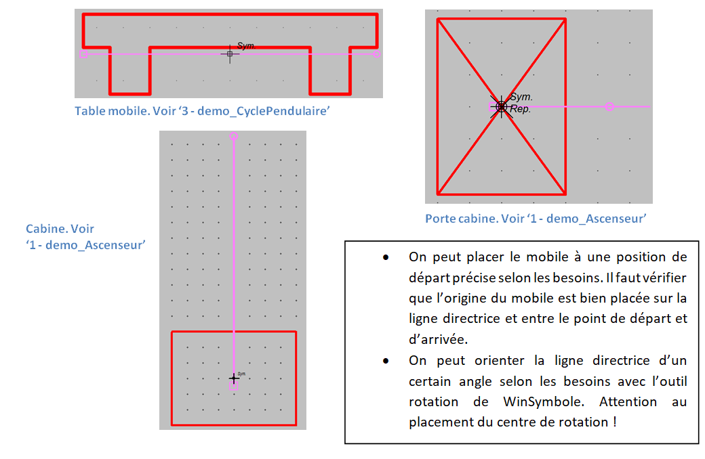

Synoptique
Préambule
Le simulateur permet de créer des petites parties opératives contrôlables avec les actionneurs
du schéma. Il intègre un moteur physique 2D pour apporter un certain réalisme à la simulation. Exemple :
 Cet exemple montre deux bidons cylindriques vus de côté posés sur une rampe inclinée. Lorsque la tige du vérin sort, les deux bidons sont remontés vers le haut de la rampe.
Lorsque la tige du vérin rentre, les deux bidons roulent (ou glissent selon le coefficient de frottement appliqué) vers le bas de la rampe en restant finalement bloqués en position par le nez du vérin.
Cet exemple montre deux bidons cylindriques vus de côté posés sur une rampe inclinée. Lorsque la tige du vérin sort, les deux bidons sont remontés vers le haut de la rampe.
Lorsque la tige du vérin rentre, les deux bidons roulent (ou glissent selon le coefficient de frottement appliqué) vers le bas de la rampe en restant finalement bloqués en position par le nez du vérin.
Deux types d'objets sont utilisés par le moteur physique :
-
les objets physiques qui sont soumis aux forces extérieures et à la gravité. Ils ont notamment une masse en kilogrammes
-
les objets kinématiques ont leurs positions dans la scène contrôlés directement par le programme. Ils sont insensibles aux forces extérieures et donc non soumis aux lois de la physique. Les objets physiques peuvent entrer en collision avec les objets kinématiques.
Paramétrage objet physique


| shape | bibliothèque \_Physique |
|---|---|
| dynamique = | True -> l'objet est de type 'physique', False -> l'objet est de type 'kinématique' |
| masse = | masse en kg de l'objet physique [1 à 100 kg] |
| friction = | coefficient de friction [0 à 100] appliqué à l'objet physique |
| pas_de_rotation = | applique une masse et une valeur d'inertie considérable à l'objet physique |
| id_collision = | * (valeur par défaut) |
| nom_texture = | nom de l'image (format png uniquement) |
- si dynamique = False, les paramètres masse et friction sont ignorés.
Paramétrage objet kinématique
| kinematic | bibliothèque \_Synoptique |
|---|---|
| parent = | désigne un parent qui ne peut-être qu'une liaison glissière |
| id_collision = | * (valeur par défaut) |
| nom_texture = | nom de l'image qui peut être appliqué à l'objet (format png uniquement) |
| show = | True (False ou True) montrer/cacher l'objet |
- Un objet kinématique peut-être attaché à une liaison glissière.
- Le paramètre show permet l'utilisation de 'murs' invisibles.
Détecteur et Fin de course
Détecte des objets physiques et kinématiques qui entrent dans la zone de détection du détecteur/Fin de course
- Un détecteur (sensor) est un objet kinématique spécialisé disponible dans la bibliothèque _Synoptique
| sensor | bibliothèque \_Synoptique |
|---|---|
| parent = | désigne un parent qui ne peut-être qu'une liaison glissière |
| id_collision = | * (valeur par défaut, détecte tous les objets présents dans la zone de détection) |
| nom_texture = | nom de l'image qui peut être appliquée à l'objet (format png uniquement) |
| * = | fixe la position du voyant indicateur (carré vert) |
- Un détecteur avec id_collision = * détecte tous les objets qui entrent dans sa zone de détection.
- id_collision permet de filtrer les objets détectés par un composant détecteur ou fin de course. Par exemple :

| Filtrage des objets en collision |
|---|
| le sensor A détecte uniquement l'objet P2 |
| le sensor * détecte les objets P1, P2 et P3 |
| sensor B détecte uniquement l'objet P3 |
-
La zone de détection d'un détecteur est définie par un contour de couleur magenta (255,0,255) (255,0,255) . Par exemple :

-
Si un nom de texture est défini, l'application recherche la texture (au format png seulement) dans le dossier C:\Users\Public\Documents\Elec-CAO\wrs-data\textures
- Si le nom de la texture n'est pas défini ou si le fichier texture n'est pas trouvé, une texture calculée par le programme sera plaquée sur l'objet en utilisant le bord extérieur coloré en rouge. Par exemple :
La silhouette de la texture permet de définir automatiquement la forme de collision de l'objet.
- Le moteur physique utilise la partie transparente de la texture pour délimiter la forme de collision sous la forme d'un polygone convexe comme montré ci-dessous :

- Contrainte de dessin dans WinSymbole

Liaison glissière (slider)
Les liaisons glissières sont disponibles dans la bibliothèque _Synoptique et sont préfixées avec le mot clef slider :

- Description des paramètres d'un slider :
| slider | bibliothèque \_Synoptique |
|---|---|
| controle_direction = | désigne l'objet moteur utilisé pour contrôler le mobile en direction |
| controle_vitesse = | désigne l'objet moteur utilisé pour contrôler le mobile en vitesse |
| vitesse = | vitesse en % de la vitesse du moteur (transcrite en vitesse linéaire). [0 à100%] |
| friction = | fixe la friction de la surface du mobile [0 à 100] |
| id_collision = | * (valeur par défaut, détecte tout objet entrant en collision) |
| parent = | désigne un parent qui ne peut-être qu'une autre liaison glissière |
| nom_texture = | nom de la texture qui peut-être appliquée au mobile. |
-
Eléments constitutifs d'une liaison glissière éditables dans WinSymbole :
- Ces éléments sont différentiés dans WinSymbole grâce à des couleurs précises :
- (255,128,255) identifie la ligne directrice et les limites de déplacement (symboles carré et cercle),
- (255,0,0) identifie le contour extérieur du mobile. Ce contour doit être un polygone convexe unique,
- (255,0,255) identifie la forme de collision optionnelle qui doit être un polygone convexe unique. Si ce polygone n'est pas défini, le moteur physique calcule la forme de collision à partir du contour extérieur rouge.

- Ces éléments sont différentiés dans WinSymbole grâce à des couleurs précises :
-
Exemples 
Actionneur vérin
Un vérin est une liaison glissière spécialisée.

| VerinSE, VerinDE | bibliothèque \_Verins |
|---|---|
| pression = | pression nominale [0 à 10 bar] |
| vitesse = | coefficient de vitesse de déplacement de la tige [0 à 100%] |
| id_collision = | * (valeur par défaut, détecte tout objet entrant en collision) |
| nom_texture = | nom de la texture qui peut-être appliquée à la tige |
Actionneur vérin flottant
Il est identique au composant vérin, à ceci prés qu'il peut-être attaché à une liaison glissiére.

- Il est systématiquement associé :
- à un objet Label_Pression pour le vérin simple effet,
- à deux objets Label_Pression pour le vérin double effet
- Les noms des objets Label_Pression sont utilisés dans le paramètre float_inputs (ou float_input) pour connecter les orifices des vérins.
| VerinDE_flottant | bibliothèque \_Verins |
|---|---|
| float_inputs = | (Label_Pression orifice 1, Label_Pression orifice 2) |
| parent = | désigne un parent qui ne peut-être qu'une autre liaison glissière |
| pression = | pression nominale [0 à 10 bar] |
| vitesse = | coefficient de vitesse de déplacement de la tige [0 à 100%] |
| id_collision = | * (valeur par défaut, détecte tout objet entrant en collision) |
| nom_texture = | nom de la texture qui peut-être appliquée à la tige |
| VerinSE_flottant | bibliothèque \_Verins |
|---|---|
| float_input = | Label_Pression orifice 1 |
| parent = | désigne un parent qui ne peut-être qu'une autre liaison glissière. |
| pression = | pression nominale [0 à 10 bar] |
| vitesse = | coefficient de vitesse de déplacement de la tige [0 à 100%] |
| id_collision = | * (valeur par défaut, détecte tout objet entrant en collision) |
| nom_texture = | nom de la texture qui peut-être appliquée à la tige |
Liaison glissière et parenté
Tous les objets kinématiques peuvent être attachés à une liaison glissière. Ceci est extrêmement pratique pour créer des formes de collision non convexes, par exemple :
Le nez de la tige est un objet kinématique attaché à la tige du vérin grâce au paramètre parent :
Il est possible d'attacher plusieurs objets kinématiques :

Convoyeur en vue de dessus
Les convoyeurs en vue de dessus sont disponibles dans la bibliothèque _Synoptique et sont préfixés avec le mot clef conveyor :

| conveyor | bibliothèque \_Synoptique |
|---|---|
| controle_direction = | objet moteur utilisé pour contrôler la diection du convoyeur |
| controle_vitesse = | objet moteur utilisé pour contrôler la vitesse |
| vitesse = | vitesse du convoyeur en % de la vitesse du moteur (transcrite en vitesse linéaire). [0 à 100%] |
| friction = | fixe la friction du convoyeur [0 à 100] |
| id_collision = | * (valeur par défaut) |
| parent = | désigne un parent qui ne peut-être qu'une liaison glissière |
| nom_texture = | nom de la texture qui peut-être appliquée au convoyeur |
Convoyeur en vue de côté
Les convoyeurs en vue de côté sont disponibles dans la bibliothèque _Synoptique et sont préfixés avec le mot clef side_conveyor :
| side_conveyor | bibliothèque \_Synoptique |
|---|---|
| controle_direction = | objet moteur utilisé pour contrôler la diection du convoyeur |
| controle_vitesse = | objet moteur utilisé pour contrôler la vitesse |
| vitesse = | vitesse du convoyeur en % de la vitesse du moteur (transcrite en vitesse linéaire). [0 à 100%] |
| friction = | fixe la friction du convoyeur [0 à 100] |
| id_collision = | * (valeur par défaut) |
| parent = | désigne un parent qui ne peut-être qu'une liaison glissière |
| nom_texture = | nom de la texture qui peut-être appliquée au convoyeur |
Objet dispenser
Voir 38 - demo_Convoyeurs.xrs
Objet synoptique spécialisé qui permet de distribuer un objet physique dans la scène à intervalle régulier.
- Il est nécessaire de placer au moins un exemplaire de l'objet à distribuer dans la scène.
- Le nombre d'objets distribué est limité à 16.

| dispenser | bibliothèque \_Synoptique |
|---|---|
| id_collision = | * (valeur par défaut) |
| parent = | désigne un parent qui ne peut-être qu'une liaison glissière |
| nom_texture = | nom de la texture qui peut-être appliquée au dispenser |
| dropped_object = | nom de l'objet physique distribué |
| * | fixe le point de distribbution |
| delay = | intervalle de distribution en secondes [0.1 s à 30 s] |
| show = | True (False ou True) montrer/cacher l'objet |
- si dispenser est associé à un bouton de potentiomètre, l'intervalle de distribution est ajustable ente 0.1 s et delay
Sous-ensembles synoptiques
On peut sauver et récupérer des synoptiques complets grâce aux commandes de blocs de WinRelais.

Exemple de synoptique importé tri_de_caisses: